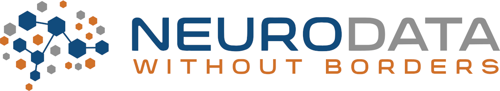

Register for the event here.
We will be using Gather and Zoom for the meeting and will send an email in the days before the workshop with links.
Program chair: Steph Prince and Oliver Rübel
The Neurodata Without Borders project is an effort to standardize the description and storage of neurophysiology data and metadata. NWB enables data sharing and reuse and reduces the energy barrier to applying data analytics both within and across labs. NWB has seen wide adoption in the neurophysiology community, and there are now over 100 datasets on the DANDI Archive in NWB, including data from the Allen Institute and the International Brain Laboratory.
The NWB Data Conversion Workshop will train members of the neuroscience community on how to convert their data to NWB and publish it on the DANDI Archive. We will train attendees starting from the basics of the NWB format and proceeding to domain-specific tutorials and advanced data engineering techniques to maximally utilize the features of the HDF5 and Zarr backends. During this workshop, we will introduce multiple sets of tools with varying levels of flexibility for converting your data, including NWB GUIDE, a new no-code user interface for data conversion.
Note: All levels of experience are welcome! We will have tutorials ranging from no-code, automated data conversion to more advanced, custom code conversion.
Below is the current draft of the agenda. All times are in Pacific Time (PT, UTC-7). Download Agenda
Please see the Code of Conduct for all NWB events.
This website and related content were prepared as an account of or to expedite work sponsored at least in part by the United States Government. While we strive to provide correct information, neither the United States Government nor any agency thereof, nor The Regents of the University of California, nor any of their employees, makes any warranty, express or implied or assumes any legal responsibility for the accuracy, completeness, or usefulness of any information, apparatus, product, or process disclosed, or represents that its use would not infringe privately owned rights. Reference herein to any specific commercial product, process, or service by its trade name, trademark, manufacturer, or otherwise, does not necessarily constitute or imply its endorsement, recommendation, or favoring by the United States Government or any agency thereof, or The Regents of the University of California. Use of the Laboratory or University’s name for endorsements is prohibited. The views and opinions of authors expressed herein do not necessarily state or reflect those of the United States Government or any agency thereof or The Regents of the University of California. Neither Berkeley Lab nor its employees are agents of the US Government. Berkeley Lab web pages link to many other websites. Such links do not constitute an endorsement of the content or company and we are not responsible for the content of such links.